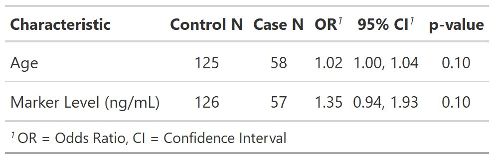

![[Experimental]](../help/figures/lifecycle-experimental.svg) Function is for advanced manipulation of gtsummary tables.
It allow users to modify the
Function is for advanced manipulation of gtsummary tables.
It allow users to modify the .$table_body data frame included
in each gtsummary object.
| modify_table_body {gtsummary} | R Documentation |
Function is for advanced manipulation of gtsummary tables.
It allow users to modify the .$table_body data frame included
in each gtsummary object.
If a new column is added to the table, default printing instructions will then
be added to .$table_header. By default, columns are hidden.
To show a column, add a column header with modify_header().
modify_table_body(x, fun, ...)
x |
gtsummary object |
fun |
unquoted (bare) function name |
... |
arguments passed to |
Example 1

modify_table_header()
See gtsummary internals vignette
# Example 1 --------------------------------
# Add number of cases and controls to regression table
modify_table_body_ex1 <-
trial %>%
select(response, age, marker) %>%
tbl_uvregression(y = response,
method = glm,
method.args = list(family = binomial),
exponentiate = TRUE,
hide_n = TRUE) %>%
add_nevent() %>%
# adding number of non-events to table
modify_table_body(dplyr::mutate, n_nonevent = N - nevent) %>%
# move new column to before the nevent column
modify_table_body(dplyr::relocate, n_nonevent, .before = nevent) %>%
modify_header(n_nonevent = "**Control N**", nevent = "**Case N**")